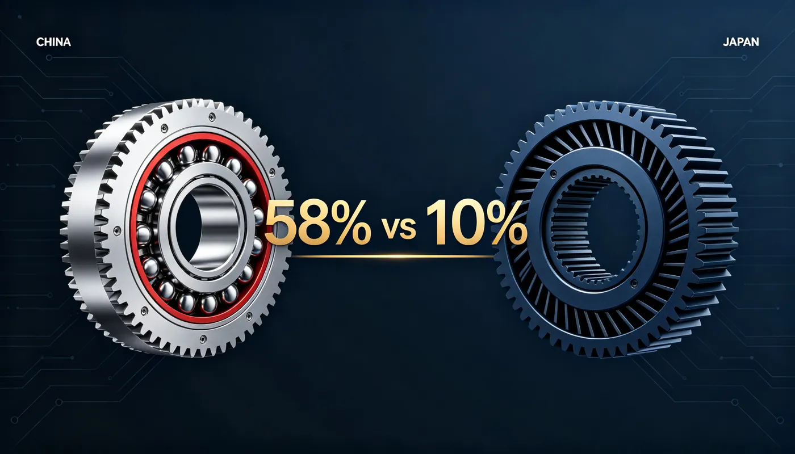
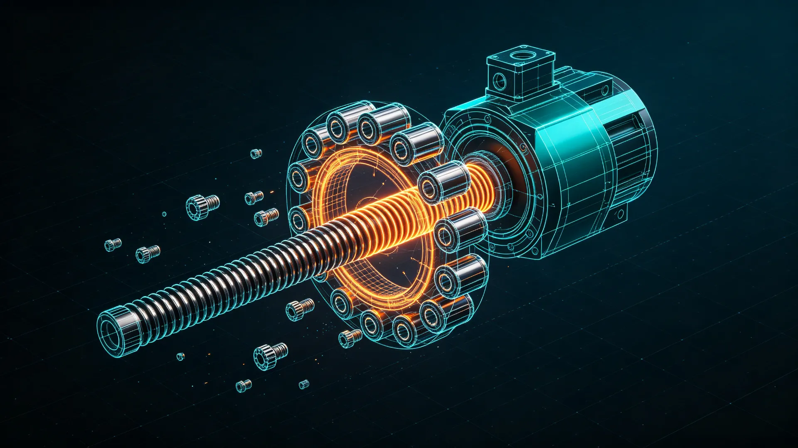
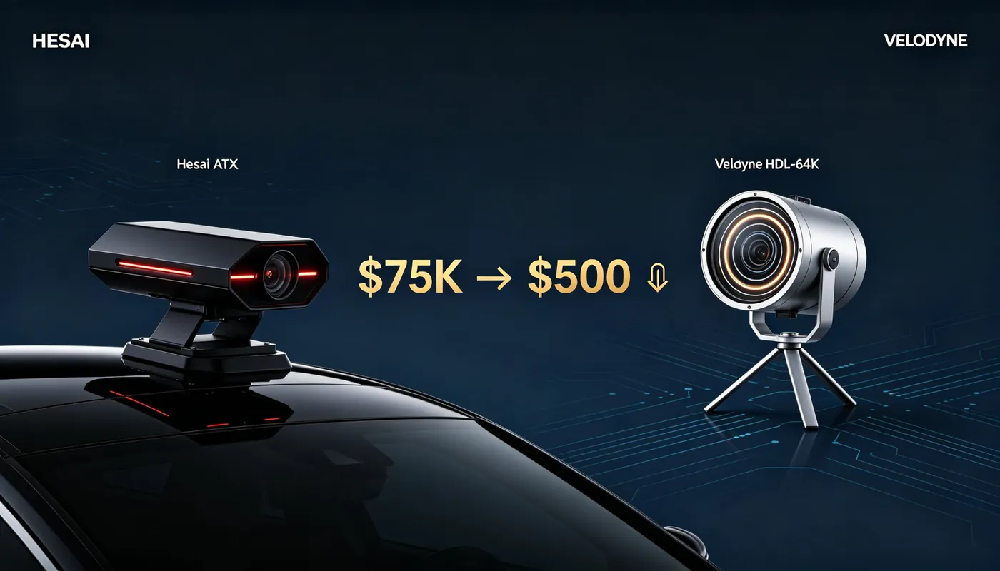
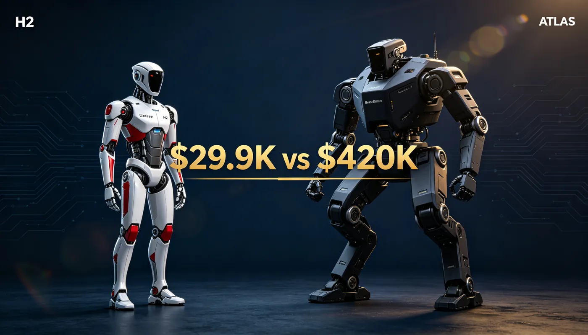
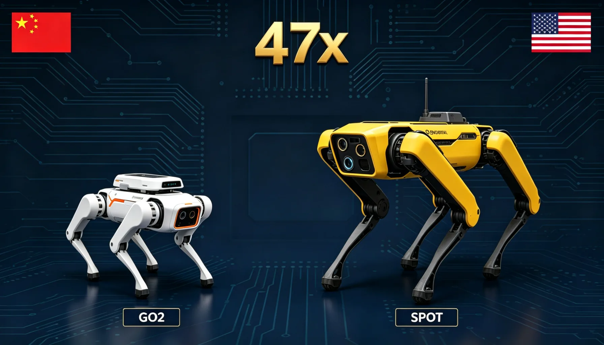
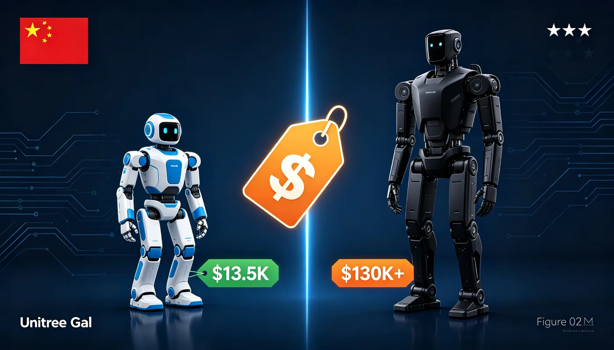
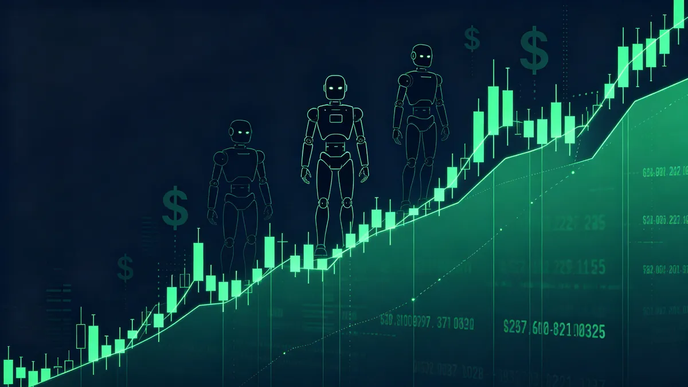
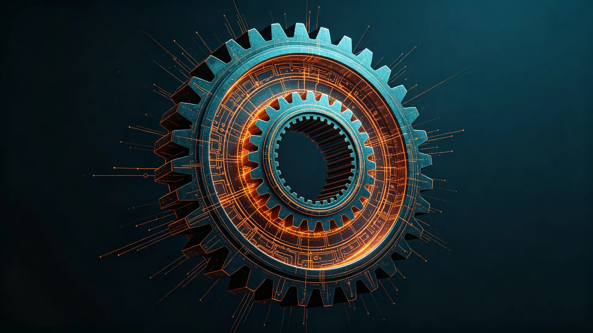
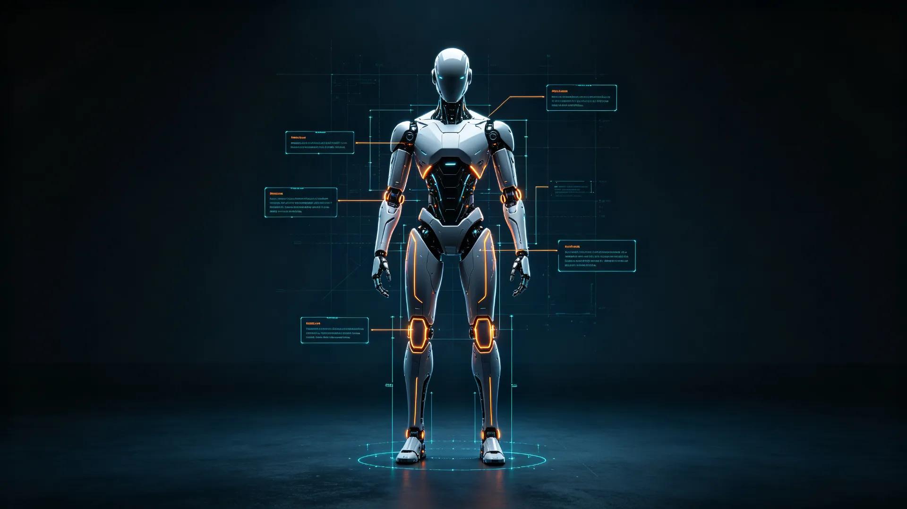

Top Chinese suppliers (Leaderdrive, Laifual, Hans), price ranges, MOQ, lead times and red flags — sourcing harmonic reducers 40-70% cheaper than Japanese HD.
Buyer's Guide Components

Geek+ (极智嘉) has shipped 20,000+ AMRs to Decathlon, Walmart, DHL. Product line, specs and how it compares to Amazon Kiva and Hai Robotics.
Company Warehouse

An ACR rides on top of racking and picks individual totes — a category invented by Shenzhen's Hai Robotics. Compare ACR vs AGV/AMR and the top Chinese vendors in 2026.
FAQ Warehouse

Roborock is Beijing-based Roborock Technology (石头科技, 688169.SH). It grew out of Xiaomi ecosystem but is independently listed — here is the full ownership breakdown vs Ecovacs and Dreame.
FAQ Home Robots

Swiss GSA & Rollvis hold >50% of the world's roller screws — the $1,350-2,700 actuators inside every humanoid leg. China still imports 80-85%, but prices collapsed from ¥10,000 to ¥2,000 and Shuanglin is building a 100,000-unit line.
Comparison Switzerland vs China

ATI owned the robot industry's sense of touch for 30 years. In 2025 Chinese suppliers took 92.8% of China's humanoid F/T sensor market — Bluetech at 80.3% — at a third of ATI's price.
Comparison USA vs China

One Japanese company still owns ~60% of the world's RV reducers. Shuanghuan reached 24.98% domestic share, ships into Tesla Optimus' waist, and cut the average price to ¥2,950.
Comparison Japan vs China

The first mass-market companion humanoid ships Sep 16: 88 DoF, RMB 119,800-990,000, 13,361 pre-orders. How it stacks up against Tesla Optimus — and the delivery test ahead.
Comparison USA vs China

IDC's first China report \u2014 \u00a51.6B market, medical vs consumer split, Hypershell Halo, and the insurance trigger about to open a ten-billion-yuan market.
Wearables Rehab

UBTECH's Walker X in 237 nursing chains, Fourier's GR-3 Care-bot, Leju's Kuafu \u2014 the race to serve 320 million seniors.
Applications Elderly Care

AgiBot 44%, Unitree 31% of global shipments \u2014 and robot exports are up 210% YoY. Who sells abroad, where the robots go, and the three-stage playbook.
Industry Exports

Velodyne's HDL-64E cost $75,000 in 2017. Hesai ships automotive long-range lidar for under $500 and owns 43% of the market. The 99.5% cost collapse that ended the American pioneer.
Comparison USA vs China

Unitree sells a full-size humanoid for $29,900. Boston Dynamics will not sell you an Atlas — and industry estimates put it near $420,000. The 14x gap, dimension by dimension.
Comparison USA vs China
Japan's Harmonic Drive holds 58% of global reducer revenue. China's Leaderdrive is No.2 globally, No.1 at home — and owns 80-90% of Chinese humanoids. The robot-joint war, dimension by dimension.
Comparison Japan vs China

For the first time, Chinese brands out-ship foreign brands at home — 55% in Q1 2026. How Estun, Inovance and JAKA beat ABB, KUKA and Fanuc, where Europe still rules, and what a buyer should do.
Comparison Europe vs China

Go2 starts at $1,600 and ships by the tens of thousands. Spot starts at $74,500 and runs oil rigs. A 47x price gap — specs, software, deployment proof and who should buy which.
Comparison US vs China

The world's most-shipped humanoid ($13.5K, open SDK, anyone can buy) against America's flagship enterprise humanoid (est. $130K+, Helix AI, BMW-only). Spec-by-spec: price, payload, hands, AI and the two production philosophies.
Comparison US vs China

Only three US-listed China plays carry real robot stories: XPeng's IRON and $900M round, Faraday Future's nine-robot launch on Sep 19, and Hesai's robot-LiDAR dominance — plus the Unitree IPO cautionary tale.
Markets Stocks
While Tesla and Unitree cram AI into robot bodies, CloudMinds and the ¥3B-seed-round Datta Robotics bet the brain belongs in the cloud — a ¥412.6B domestic market and a 23.1% CAGR behind them.
Industry Cloud

World's first automated humanoid production line went live Sep 8, 2026 — >80% core automation, an 85% overlap with XPENG's EV supply chain, and a robot that walked off the line on its own.
Industry News

Hugging Face's Microduck sold $2.6M in 24 hours. Seeed Studio builds it, Rockchip RK3566 powers it, Radxa boards it.
Products Supply Chain

Actuators take 40-56% of a humanoid's BOM. Tuopu, Sanhua, Leaderdrive and Zhongda Leader now own the muscle.
Supply Chain Actuators

~72 precision bearings per humanoid. HONB, LYC and ZWZ now supply the domestic chain at scale.
Supply Chain Components

The world's best-selling vacuum maker spun out Magic Atom — ¥500M Series A, X1 and Z1 humanoids already on factory lines.
Company Humanoid

The pillar guide — reducers, actuators, encoders, screws, hands, sensors and LiDAR. Who leads every component in 2026.
Pillar Supply Chain

Every joint needs eyes. Inovance, HCFA and Yuheng are closing Heidenhain's gap — 54 encoders per humanoid.
Supply Chain Sensors

Zhongda Leader owns Unitree's heavy joints — a 3.2B RMB contract behind 110,000 robots.
Supply Chain Reducers

Touch sensors were China's #4 bottleneck tech in 2018 — 90% imported. Now 100% domestic. Blue Dot, Kunwei, PaXini and Hanwei lead.
Supply Chain Sensors

Every finger of a robot hand runs on a coreless motor. MOONS', Zhaowei and Leadshine are breaking Maxon's grip — and cutting prices 67%.
Supply Chain Motors

China's biggest tech giant refuses to mass-produce robots. Inside Xiao Liu, Tairos and its embodied-AI "brain" strategy.
Company Embodied AI

~14 lead screws, ~19% of a humanoid's cost. China's Nanjing Tech, Best Precision, Wuzhou Xinchun and Tuopu are breaking Europe's grip.
Supply Chain Screws

The muscles behind Tesla Optimus and China's humanoid wave — Sanhua, Tuopu, Inovance, Kinco, ranked.
Supply Chain Actuators

Harmonics get the headlines; RV reducers carry the weight. The heavy-duty joint suppliers, ranked.
Supply Chain Reducers

The vacuum giant made $4B in 2025, ~80% overseas — and now builds humanoids via Magic Atom. Full story of Yu Hao's empire.
Company Deep-Dive

The vacuum giant made $4B in 2025, ~80% overseas — and now builds humanoids via Magic Atom. Full story of Yu Hao's empire.
Company Deep-Dive

$244M today, $1.16B by 2035 — UBTECH, Makeblock, DJI Education and the kit makers training China's next engineers.
Industry STEM

US$1.7B and growing 20.8% a year — Topstar, SIASUN and Estun now move wafers inside China's newest fabs.
Industry Semiconductor

Hesai, RoboSense, Seyond and Huawei control the world's LiDAR — and now the eyes of robots. The 2026 supplier guide.
Supply Chain Sensors

China's two most popular robot dogs, head to head — specs, price, sensors, AI and which one to buy in 2026.
Comparison Quadruped

Inspire Robots, Linkerbot, PaXini and the supply chain now shipping humanoid hands by the tens of thousands.
Supply Chain Hands

China's two best-known humanoids, compared — full-size commercial flagship vs the $16k volume king. Specs, price and which fits your use case.
Comparison Humanoid

Every Go2 spec that matters — size, 12 DOF, 45 N·m joints, 4D LiDAR L2, speed, payload, price and all model variants.
Specs Quadruped

Every G1 spec — height, weight, degrees of freedom, hands, battery, price — and how it beats Tesla Optimus on cost.
Specs Unitree

Two Chinese humanoids, two strategies. The honest comparison of the volume king and the industrial challenger.
Comparison Humanoid

The 2026 supplier list — Leaderdrive, Laifual, Haozhi and more — that now powers China's robot joints.
Supply Chain Reducers

Who makes the screws inside Chinese humanoids? Hengli, XCC, Best Precision and the picks-and-shovels play.
Supply Chain Actuators
How national, city and provincial money plus industrial parks are backing the humanoid bet.
Policy Funding
China shipped most of the world's humanoid robots in 2025. Meet the seven companies leading the race — and the one force that will decide who wins.
Humanoid2026

Before the humanoid hype, there was a quieter Chinese victory. How Ecovacs, Roborock and Narwal turned a niche gadget into a global category.
ConsumerHome

In 2025, Chinese brands beat ABB, FANUC, Yaskawa and KUKA on their home turf for the first time. How Estun, Inovance and SIASUN did it.
IndustrialMarket

More than ¥100 billion poured into China's humanoid startups in two years. The funding mechanics behind the boom — and where the money is heading.
FundingStartups